30 Mei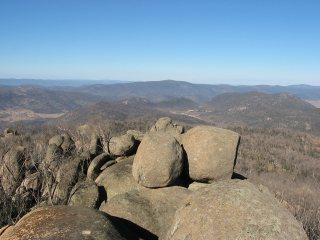 Nog een bushwalk vandaag, ditmaal met een hele groep collega's van een andere afdeling van het lab. Deze route was een stuk zwaarder, en de meeste wandelaars zijn na de lunch bij een uitzichtpunt weer omgekeerd. Vanaf daar hield het pad namelijk op. Zes andere bikkels en ik zijn doorgegaan door de struiken, en het uitzicht vanaf Mt Orroral was schitterend. Er lag zelfs een heel klein beetje sneeuw op de 1615 meter hoge top. Was zeker de 600 hoogtemeters klimmen waard.Als het goed is volgt binnenkort een groepsfoto vanaf de top. |
29 Mei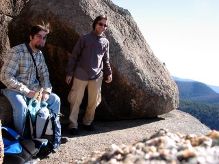 Vandaag samen met Régis, een Franse student die hier ook stage loopt, een bushwalk gedaan naar Square Rock in Namadgi National Park. Na een uur rijden door landschap dat vorig jaar januari is afgebrand kwamen we dan eindelijk bij bos dat alleen maar aangetast was. Ongelooflijk om te zien hoe het leven langzaam weer terug komt.Op de terugweg nog even een Hot Chocolate gedronken bij het Canberra Deep Space Communication Complex, waar satelliet data ontvangen worden. |
28 MeiOp donderdagochtend ontbijt met Eggs, Bacon and Sausages gehad op het werk. Heerlijk na een lange fietstocht. |
27 Mei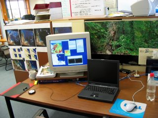 Omdat ik tijdelijk in het "executive office" zat en dat nu als zodanig weer gebruikt gaat worden, ben ik gisteren verhuisd naar een nieuwe werkplek. Al mijn posters verhangen, en ik voel me nu al weer thuis achter mijn eigen buro. |
26 Mei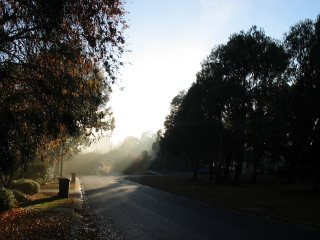 Na twee dagen met wat regen scheen vanochtend de zon weer als vanouds. Met al het vocht op de grond en in de lucht leverde dat mooie plaatjes op. Hier is er een. |
25 Mei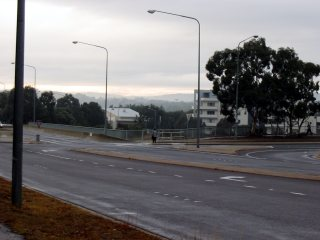 Gisteravond in de regen naar huis gefiets (de eerste echte regen die ik hier in Canberra gezien heb). Misschien moeilijk voor te stellen als je in Nederland bent, maar het was heerlijk. Na een boel regen vannacht staan er overal plassen en ruikt het heerlijk fris. Het stof is van de bomen gespoeld en hopelijk gaat het gras nu ook weer een beetje groen worden. Vanochtend tussen de buien door naar het werk gefietst en het voelt bijna tropisch, zo vochtig.Dit is dan hoe het eruit ziet onderweg. Heel wat anders dan wat ik gewend ben... |
24 Mei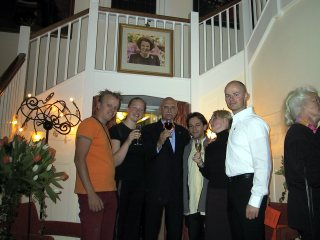 Zoals beloofd, is hier de foto uit de ambassadeurswoning op koniginnedag. De meneer in het midden is de ambassadeur (voor de duidelijkheid).Met dank aan Erik voor het mailen. |
23 MeiNa gisteren was deze dag nog minder spannend. De rest van de krant gelezen op de top van Mount Rogers. Eigenlijk was dit weekend ingeruimd om te verhuizen, maar nu dat is geregeld en ik nog een paar weken moet wachten ben ik wel weer heerlijk uitgerust. |
22 Mei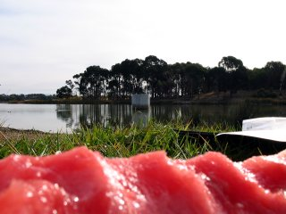 Na een nodige reparatie aan wat draaiende onderdelen van de fiets (die waren misschien te goedkoop), maar lekker in de zon onder het genot van een kwart watermeloen de krant gelezen aan Lake Gininderra. |
21 MeiEen feestje van mensen die ik op het feest vorige week had leren kennen en die een kamer in de aanbieding hadden. In eerste instantie was de kamer al vergeven, maar door een wat ingewikkelde constructie kan ik nu over een paar weken verhuizen naar het centrum van Canberra. Waar feesten toch niet goed voor zijn...Foto's volgen nog. |
16 Mei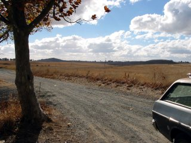 Op de terugweg was er dit te zien: bijna alleen maar dor gras waar je ook kijkt. Het moet er schitterend uizien als het groen is... |
15 Mei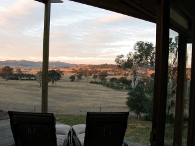 Vandaag naar de housewarmingparty van een collega geweest. Hij is verhuisd naar het platteland en dit is het uitzicht vanaf de veranda. Al het land dat vanaf de foto te zien is hoort bij het huis, plus nog veel meer aan de andere kant.De barbie was weer heerlijk, en na een lange avond maar op de bank blijven slapen. |
11 MeiVandaag heb ik maar even wat aan de organisatie van de weblog gedaan. Door de link onderaan de pagina's te volgen kunnen de oude pagina's bekeken worden. Vooral de fotopagina werd anders erg groot. |
9 Mei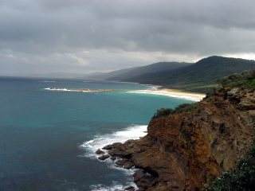 Na een regenachtige nacht leek het niet veel beter te worden. Maar weer ingestapt en na op nog wat plaatsen gekeken te hebben maar weer de 180 km terug naar Canberra gereden. Onderweg nog even gestopt in het stadje Braidwood, dat er precies zo uitziet als in de films. Mijn auto paste er zonder problemen in het straatbeeld. |
8 Mei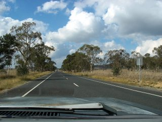 Nu ik eindelijk vervoer heb meteen maar op weg naar de Kust. Dit is de snelweg daar naartoe (beide richtingen). Je ziet er redelijk wat auto's maar soms ook niet een.Eenmaal aan de kust aangekomen liep er 1 andere persoon op het strand toen er wat regendruppels begonnen te vallen. Ik besloot hem te vragen wat de voorspelling was en wat blijkt: hij heeft een broer in Utrecht!! wonen en kon Nederlands. Geen idee hoe ik ze ertussenuit pik. Na een rondleiding door de omgeving (waarbij hij z'n Nederlands weer even kon ophalen), heb ik de auto op een camping aan het strand geparkeerd waar de kangaroes en eenden eromheen liepen. Het grote matras achter in de auto sliep prima. |
7 Mei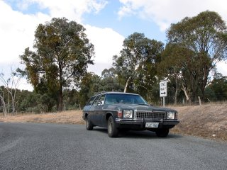 Vandaag dan maar een auto aangeschaft: Een Holden HZ Kinswood SL 4.2 litre V8. Hij is behoorlijk oud en ziet er ook zo uit, maar functioneert nog prima (auto's worden hier veel ouder dan in Nederland). Ik heb de auto overigens gekocht van een Nederlandse student die ik in de ambassadeurswoning ontmoet had en nu weer terug is naar Nederland. |
1 MeiEen dag nieuwe mensen ontmoeten. 's Morgens kennis gemaakt met een achternicht die ik nog niet eerder ontmoet had en 150 km hiervandaan woont, in de middag heeft ze me voorgesteld aan een tante van haar, die hier in Canberra woont. In de avond nog een bezoek gedaan. Kortom, een dag vol nieuwe gezichten. |